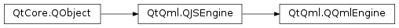

QQmlEngine¶
Inherited by: QQmlApplicationEngine
Synopsis¶
Functions¶
- def
addImageProvider(id, arg__2) - def
addImportPath(dir) - def
addNamedBundle(name, fileName) - def
addPluginPath(dir) - def
baseUrl() - def
clearComponentCache() - def
imageProvider(id) - def
importPathList() - def
importPlugin(filePath, uri, errors) - def
incubationController() - def
networkAccessManager() - def
networkAccessManagerFactory() - def
offlineStorageDatabaseFilePath(databaseName) - def
offlineStoragePath() - def
outputWarningsToStandardError() - def
pluginPathList() - def
removeImageProvider(id) - def
rootContext() - def
setBaseUrl(arg__1) - def
setImportPathList(paths) - def
setIncubationController(arg__1) - def
setNetworkAccessManagerFactory(arg__1) - def
setOfflineStoragePath(dir) - def
setOutputWarningsToStandardError(arg__1) - def
setPluginPathList(paths) - def
setUrlInterceptor(urlInterceptor) - def
trimComponentCache() - def
urlInterceptor()
Slots¶
- def
retranslate()
Static functions¶
- def
contextForObject(arg__1) - def
objectOwnership(arg__1) - def
setContextForObject(arg__1, arg__2) - def
setObjectOwnership(arg__1, arg__2)
Detailed Description¶
-
class
PySide2.QtQml.QQmlEngine([p=nullptr])¶ Parameters: p – PySide2.QtCore.QObject
-
PySide2.QtQml.QQmlEngine.ObjectOwnership¶
-
PySide2.QtQml.QQmlEngine.addImageProvider(id, arg__2)¶ Parameters: - id – unicode
- arg__2 –
PySide2.QtQml.QQmlImageProviderBase
-
PySide2.QtQml.QQmlEngine.addImportPath(dir)¶ Parameters: dir – unicode
-
PySide2.QtQml.QQmlEngine.addNamedBundle(name, fileName)¶ Parameters: - name – unicode
- fileName – unicode
Return type: PySide2.QtCore.bool
-
PySide2.QtQml.QQmlEngine.addPluginPath(dir)¶ Parameters: dir – unicode
-
PySide2.QtQml.QQmlEngine.baseUrl()¶ Return type: PySide2.QtCore.QUrl
-
PySide2.QtQml.QQmlEngine.clearComponentCache()¶
-
static
PySide2.QtQml.QQmlEngine.contextForObject(arg__1)¶ Parameters: arg__1 – PySide2.QtCore.QObjectReturn type: PySide2.QtQml.QQmlContext
-
PySide2.QtQml.QQmlEngine.exit(retCode)¶ Parameters: retCode – PySide2.QtCore.int
-
PySide2.QtQml.QQmlEngine.imageProvider(id)¶ Parameters: id – unicode Return type: PySide2.QtQml.QQmlImageProviderBase
-
PySide2.QtQml.QQmlEngine.importPathList()¶ Return type: list of strings
-
PySide2.QtQml.QQmlEngine.importPlugin(filePath, uri, errors)¶ Parameters: - filePath – unicode
- uri – unicode
- errors –
QList
Return type: PySide2.QtCore.bool
-
PySide2.QtQml.QQmlEngine.incubationController()¶ Return type: PySide2.QtQml.QQmlIncubationController
-
PySide2.QtQml.QQmlEngine.networkAccessManager()¶ Return type: PySide2.QtNetwork.QNetworkAccessManager
-
PySide2.QtQml.QQmlEngine.networkAccessManagerFactory()¶ Return type: PySide2.QtQml.QQmlNetworkAccessManagerFactory
-
static
PySide2.QtQml.QQmlEngine.objectOwnership(arg__1)¶ Parameters: arg__1 – PySide2.QtCore.QObjectReturn type: PySide2.QtQml.QQmlEngine.ObjectOwnership
-
PySide2.QtQml.QQmlEngine.offlineStorageDatabaseFilePath(databaseName)¶ Parameters: databaseName – unicode Return type: unicode
-
PySide2.QtQml.QQmlEngine.offlineStoragePath()¶ Return type: unicode
-
PySide2.QtQml.QQmlEngine.outputWarningsToStandardError()¶ Return type: PySide2.QtCore.bool
-
PySide2.QtQml.QQmlEngine.pluginPathList()¶ Return type: list of strings
-
PySide2.QtQml.QQmlEngine.quit()¶
-
PySide2.QtQml.QQmlEngine.removeImageProvider(id)¶ Parameters: id – unicode
-
PySide2.QtQml.QQmlEngine.retranslate()¶
-
PySide2.QtQml.QQmlEngine.rootContext()¶ Return type: PySide2.QtQml.QQmlContext
-
PySide2.QtQml.QQmlEngine.setBaseUrl(arg__1)¶ Parameters: arg__1 – PySide2.QtCore.QUrl
-
static
PySide2.QtQml.QQmlEngine.setContextForObject(arg__1, arg__2)¶ Parameters: - arg__1 –
PySide2.QtCore.QObject - arg__2 –
PySide2.QtQml.QQmlContext
- arg__1 –
-
PySide2.QtQml.QQmlEngine.setImportPathList(paths)¶ Parameters: paths – list of strings
-
PySide2.QtQml.QQmlEngine.setIncubationController(arg__1)¶ Parameters: arg__1 – PySide2.QtQml.QQmlIncubationController
-
PySide2.QtQml.QQmlEngine.setNetworkAccessManagerFactory(arg__1)¶ Parameters: arg__1 – PySide2.QtQml.QQmlNetworkAccessManagerFactory
-
static
PySide2.QtQml.QQmlEngine.setObjectOwnership(arg__1, arg__2)¶ Parameters: - arg__1 –
PySide2.QtCore.QObject - arg__2 –
PySide2.QtQml.QQmlEngine.ObjectOwnership
- arg__1 –
-
PySide2.QtQml.QQmlEngine.setOfflineStoragePath(dir)¶ Parameters: dir – unicode
-
PySide2.QtQml.QQmlEngine.setOutputWarningsToStandardError(arg__1)¶ Parameters: arg__1 – PySide2.QtCore.bool
-
PySide2.QtQml.QQmlEngine.setPluginPathList(paths)¶ Parameters: paths – list of strings
-
PySide2.QtQml.QQmlEngine.setUrlInterceptor(urlInterceptor)¶ Parameters: urlInterceptor – PySide2.QtQml.QQmlAbstractUrlInterceptor
-
PySide2.QtQml.QQmlEngine.trimComponentCache()¶
-
PySide2.QtQml.QQmlEngine.urlInterceptor()¶ Return type: PySide2.QtQml.QQmlAbstractUrlInterceptor
-
PySide2.QtQml.QQmlEngine.warnings(warnings)¶ Parameters: warnings –
© 2018 The Qt Company Ltd. Documentation contributions included herein are the copyrights of their respective owners. The documentation provided herein is licensed under the terms of the GNU Free Documentation License version 1.3 as published by the Free Software Foundation. Qt and respective logos are trademarks of The Qt Company Ltd. in Finland and/or other countries worldwide. All other trademarks are property of their respective owners.